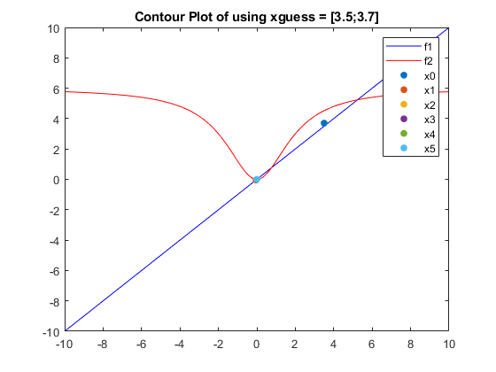
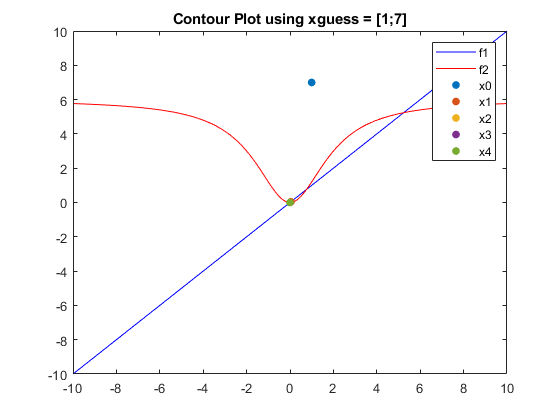

Contents
close all
clear all
Problem 3 Part 2
a = 1;
b = 0.5;
c = 3;
d = 4;
x1 = -10:0.1:10;
x2 = -10:0.1:10;
[X1, X2] = meshgrid(x1,x2);
f1 = -a.*X1 + X2;
f2 = ((c.*(X1.^2))./(X1.^2 + d)) - b.*X2;
figure;
[c1 c2] = contour(X1,X2,f1,[0 0], 'Color', 'b');
hold on
[c3 c4] = contour(X1,X2,f2,[0 0], 'Color', 'r');
legend('f1', 'f2');
title('Contour Plot of using xguess = [3.5;3.7]');
hold on
x0 = [3.5;3.7];
xplotint = plot(3.5,3.7,'.','MarkerSize',20);
x_k = x0;
xt = x0;
hold on
for i=1:1:5
fk = [-x_k(1) + x_k(2); 3*x_k(1)^2/(x_k(1)^2+4) - 3*x_k(2)];
J11 = -1;
J12 = 1;
J21a = (24 * x_k(1));
J21b = ((x_k(1)^2) + 4)^2;
J21 = J21a / J21b;
J22 = -0.5;
J = [J11 J12;
J21 J22];
x_k = x_k - J\fk;
x_k = x_k/1.0e+03;
xt = [xt x_k];
xplot_k = plot(x_k(1), x_k(2), '.', 'MarkerSize',20);
end
lengdv = ['f1'; 'f2'; 'x0'; 'x1'; 'x2'; 'x3'; 'x4'; 'x5'; 'x6'];
legend(lengdv)
Warning: Ignoring extra legend entries.

Part 3
a = 1;
b = 0.5;
c = 3;
d = 4;
x1 = -10:0.1:10;
x2 = -10:0.1:10;
[X1, X2] = meshgrid(x1,x2);
f1 = -a.*X1 + X2;
f2 = ((c.*(X1.^2))./(X1.^2 + d)) - b.*X2;
figure;
[c1 c2] = contour(X1,X2,f1,[0 0], 'Color', 'b');
hold on
[c3 c4] = contour(X1,X2,f2,[0 0], 'Color', 'r');
legend('f1', 'f2');
title('Contour Plot using xguess = [1;7]');
hold on
x0 = [1;7];
xplotint = plot(1,7,'.','MarkerSize',20);
x_k = x0;
hold on
n=0;
err = 1;
xt2 = x0;
while err>1e-4
fk = [-x_k(1) + x_k(2); 3*x_k(1)^2/(x_k(1)^2+4) - 3*x_k(2)];
err=abs(fk(1))+abs(fk(2));
J11 = -1;
J12 = 1;
J21a = (24 * x_k(1));
J21b = ((x_k(1)^2) + 4)^2;
J21 = J21a / J21b;
J22 = -0.5;
J = [J11 J12;
J21 J22];
x_k = x_k - J\fk;
x_k = x_k/1.0e+03;
xt2 = [xt2 x_k];
n = n+1;
xplot_k = plot(x_k(1), x_k(2), '.', 'MarkerSize',20);
end
lengdv = ['f1'; 'f2'; 'x0'; 'x1'; 'x2'; 'x3'; 'x4'; 'x5'; 'x6'];
legend(lengdv)
Warning: Ignoring extra legend entries.

Echoing and Returning Results
diary vjprob3.txt
echo on
disp('Part 2')
disp('Iteration using guess [3.5;3.7]');
xt
disp('Considering we are using tangents, we should expect the behavior for the first guess to be far and as the overall tangent "size" decreases, the answer iterate closer to true values.');
disp('Part 3')
disp('Iteration using guess [1;7]')
xt2
echo off
disp('Part 2')
Part 2
disp('Iteration using guess [3.5;3.7]');
Iteration using guess [3.5;3.7]
xt
xt =
3.5000 -0.0445 0.0002 -0.0000 0.0000 -0.0000
3.7000 -0.0445 0.0002 -0.0000 0.0000 -0.0000
disp('Considering we are using tangents, we should expect the behavior for the first guess to be far and as the overall tangent "size" decreases, the answer iterate closer to true values.');
Considering we are using tangents, we should expect the behavior for the first guess to be far and as the overall tangent "size" decreases, the answer iterate closer to true values.
disp('Part 3')
Part 3
disp('Iteration using guess [1;7]')
Iteration using guess [1;7]
xt2
xt2 =
1.0000 0.0388 -0.0002 0.0000 -0.0000
7.0000 0.0388 -0.0002 0.0000 -0.0000
echo off